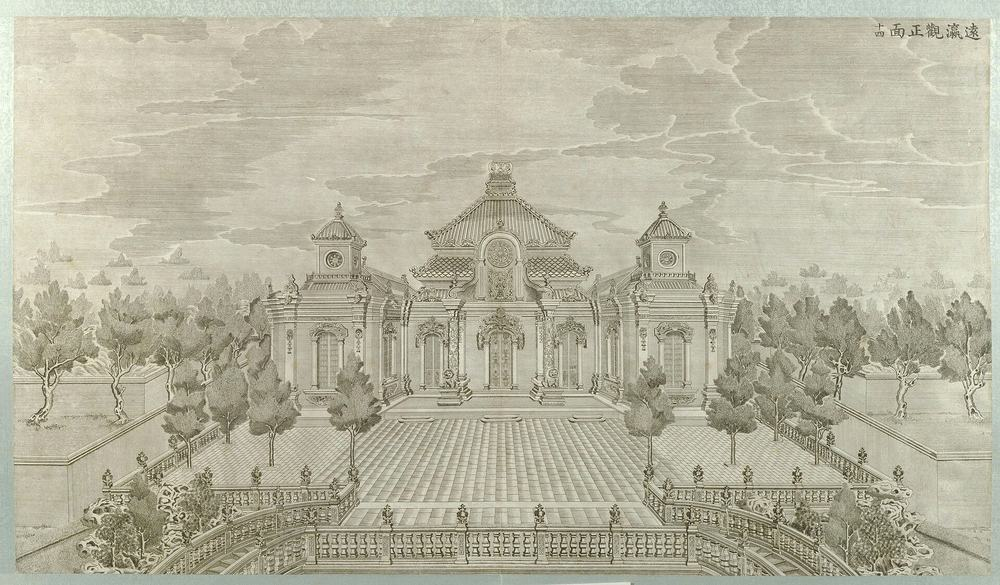
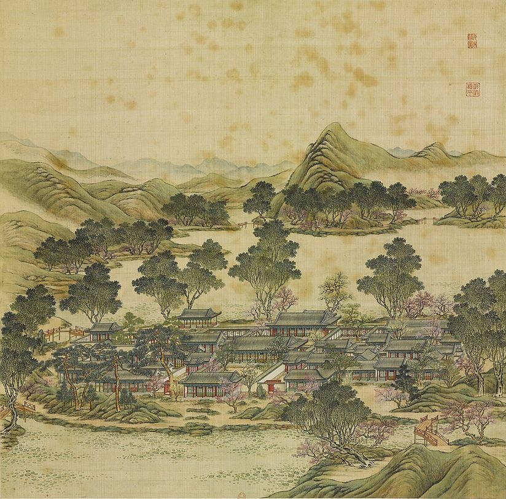

它是什么
三座园子，一处皇家居所。
圆明园在北京城西北，由圆明园、长春园、绮春园三座园子组成，合称“圆明三园”。
园子始建于康熙年间，雍正、乾隆两朝相继扩建。自乾隆起，这里是皇帝的主要居所，日常政务也在这里处理；紫禁城则用于举行正式典礼。
园中绝大部分是中国式的殿宇、湖泊和山丘，一处处布置成景。长春园北部还有一小片欧式宫苑，即西洋楼，1747 年动工，由耶稣会士郎世宁设计，蒋友仁负责喷泉水法。
发生了什么
1860 年 10 月。
第二次鸦片战争期间，英法军队劫掠了圆明园，随后英军将它焚毁。
- 10 月 6 日英法军队占领圆明园。
- 10 月 7–9 日两国军队在园中劫掠。《圆明园四十景图》也在被掠之列，现藏法国国家图书馆。
- 10 月 18–19 日英国高级专员额尔金下令毁园，以报复清方拘押的人员遭受酷刑和处决。英军在格兰特将军指挥下放火，烧毁了园中大部分建筑。法军指挥官拒绝参与。
今天这里是海淀区的一座公园。西洋楼遗址是园中最显眼的建筑遗存，东半部的湖泊和水道已经重新清淤蓄水。
西洋楼
废墟之所存。

圆明园最为人知的遗址就在这里：乾隆朝自1747年起由传教士设计、中国工匠营建的一组欧式宫殿和喷泉。我们逐栋整理了铜版画、新旧废墟照片、已知尺寸、现存遗迹和流散石件的去向。
圆明三园 · 逐景
殿宇、湖山，逐景考订。

西洋楼以外，圆明园是环绕湖山布置的中式殿宇庭院。我们为每一景、每一组建筑整理了1744年四十景图、清代文献与图档、考古发掘和今日遗址所提供的信息，以及已知的尺寸，供下一步建模之用。
怎样复原
每座建筑，都有出处。
建筑的位置和平面，依据清代的园林图档；形制、屋顶、树木和桥梁，参考《圆明园四十景图》和 18 世纪 80 年代的西洋楼铜版画；再借助今天仍在的湖泊、岛屿和山丘，把旧图和实地对应起来。
每一处都注明来源和可信等级。证据不足的地方我们会推测，并且明确标出。
A见于园林尚存时的资料，或实测自至今未变的遗存。
B后世资料：遗址照片、20 世纪的测绘、现代学术复原，或者只有文字记载。
C根据建筑类型或对称关系推断。凡是推测，一律标为 C。